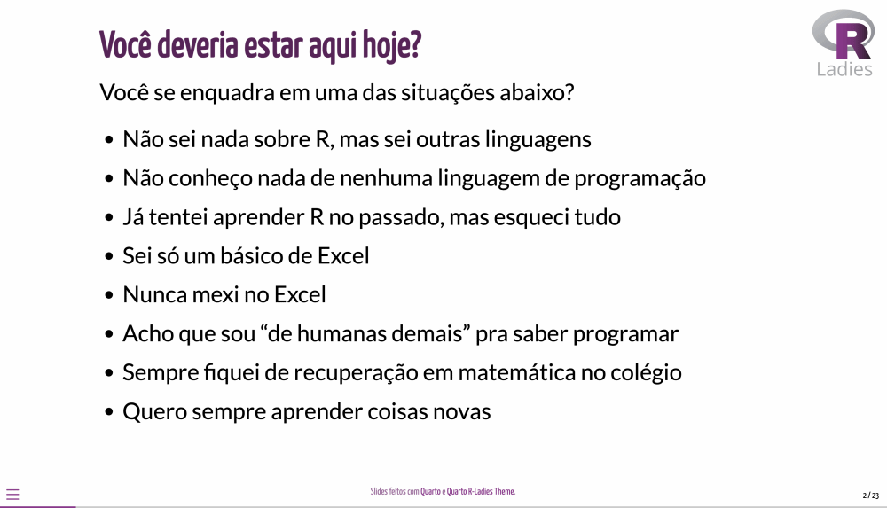
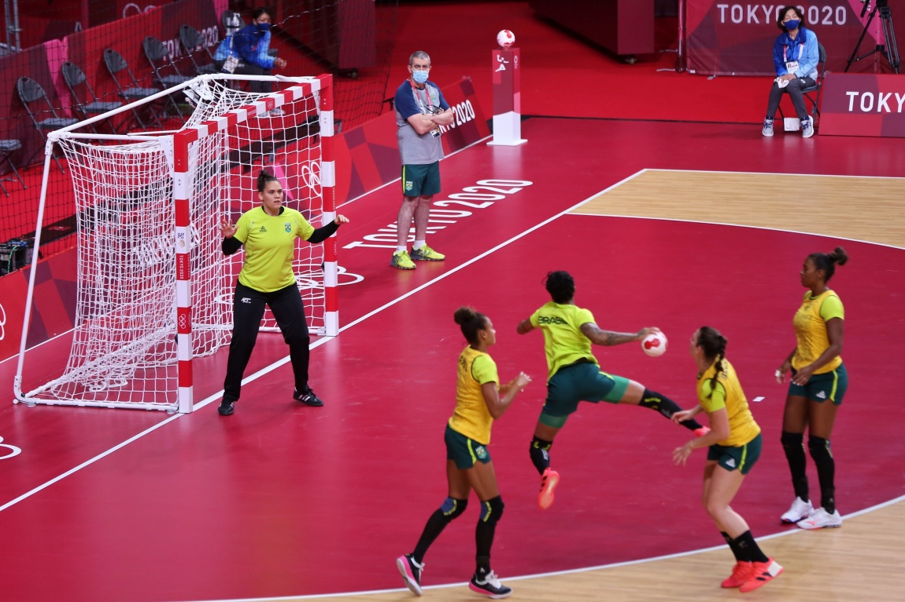
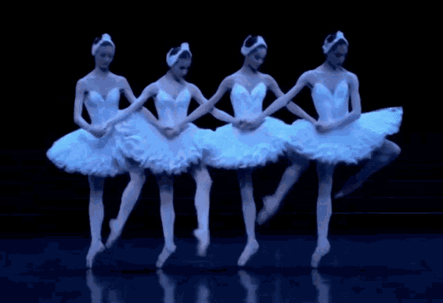

Quando eu, Bianca, comecei no “mundinho dos dados”, as comunidades de tecnologia me ofereceram um espaço acolhedor para aprender sem o medo de errar. Falar de “espaço acolhedor”, pode parecer exagero e até contraditório; se errar faz parte do aprendizado, porque seria intimidador fazer isso enquanto se aprende, né? Mas, infelizmente, é muito fácil se sentir desencorajado quando é a primeira vez que você tem contato com uma tecnologia ou setor de atuação. A situação fica ainda mais chata quando se é integrante de um grupo sub-representado nesta área.
Os relatos deste post são de participantes do último meetup organizado pela R-Ladies São Paulo. Ambas vivenciaram sua primeira experiência num evento das R-Ladies e ressaltam o sentimento de acolhimento para dar um primeiro passo no R. Mesmo sendo facilitadora do workshop, também estava ali fazendo algo pela primeira vez: apresentando a organização! Até pouco tempo, estava acompanhando de longe as atividades da comunidade (deixo aqui o convite para apresentarem também! Vamos hablar hehe)
Boa leitura!
“Acolhe pessoas com vontade de aprender R”
por Gabriela Morita
Em 28 de outubro de 2023 participei do meu primeiro curso sobre a linguagem R. O curso “Introdução ao R - um curso para quem quer começar” foi organizado e desenvolvido pela equipe potente da #RLadiesSP, que faz parte da organização mundial R-Ladies, com o propósito de promover a diversidade de gênero na comunidade da linguagem R.
O curso acolhe pessoas com vontade de aprender R, mesmo sem ter experiência ou contato prévio. O contato com as ferramentas é incentivado antes do encontro presencial, com tutoriais para a instalação do R e do RStudio, que são utilizados para desenvolver as atividades.

No dia do curso, são estabelecidas duas etapas:
A etapa 1 (pela manhã), com introdução sobre a organização RLadies, e também apresentação sobre vantagens de usar o R
E a etapa 2, à tarde, em que é apresentado os pacotes do Tidyverse e suas aplicações.
Agradeço demais às R-Ladies SP - Bianca Muniz, Geovana Lopes, Haydee Svab e a Renata Hirota - que compartilharam seus conhecimentos e práticas neste encontro, foi um espaço de muito aprendizado, partilhas e num formato muito acolhedor e colaborativo.
Divagações de uma iniciante em R
No dia 28 de outubro de 2023 ocorreu o Evento R-Ladies São Paulo, do qual participei como iniciante no 'mundo R'. Em uma manhã e tarde de sábado mergulhei em um momento de aprendizagem proporcionado por uma equipe dedicada e disposta a ensinar e compartilhar conhecimento.
A Oficina de Introdução ao R iniciou com a apresentação da comunidade R-Ladies, esforço global presente em 16 localidades brasileiras, seguindo com motivações para aprender linguagem R. Em preparo para adentrar no tema da Oficina, foi construído um ambiente muito acolhedor a partir da reflexão sobre o sentimento de exclusão compartilhado por diversos indivíduos, que se consideram inaptos a aprender este tipo de conhecimento por razões como "ser de humanas demais" ou "não se dar bem com matemática".
Da minha parte, durante muito tempo me encaixei nesses rótulos e, após uma longa jornada de autoconhecimento e estudo, descobri que contextualizar conhecimentos que se mostram (a princípio) muito distantes de nossas afinidades torna a aprendizagem mais palpável e leve. Por esse motivo, no assunto seguinte abordado na Oficina, que eram os conceitos iniciais de programação, busquei algumas contextualizações para aproximar os ensinamentos sobre R.
Em meio à dificuldade de materializar conceitos, passei por algumas divagações que me ajudaram a estabelecer pontes entre o meu "eu" de "antes e depois" do evento. Compartilho aqui estas divagações para explicar os conceitos de função e pacote, a partir dos aprendizados de um sábado com as R-Ladies.
De jogadas de handebol às funções do R
No handebol existem jogadas preestabelecidas que auxiliam atletas no momento do ataque. Essas jogadas consistem em um conjunto de movimentações e passes da bola que criam oportunidade para o arremesso ao gol. Praticantes treinam estas jogadas e as conhecem por nomes: "araraquara", "argentina", "circulação", "loose", "roda"... Ou seja, estas jogadas estão armazenadas nas memórias de jogadores e são identificadas por nomes, que significam determinadas movimentações.

No Evento R-Ladies aprendemos que funções são palavras que dão comandos ao computador. Por exemplo, mean é a palavra que dá o comando de obter média. As funções estão gravadas no programa, assim como as jogadas estão registradas nas memórias de atletas de handebol. No handebol, ao utilizar a palavra que expressa a jogada, a movimentação é realizada. No R, ao utilizar a palavra que expressa a função, o comando é realizado.
Dos métodos de Ballet aos pacotes do R
Existem diferentes métodos da prática do Ballet, dos quais os mais famosos são o Vaganova (russo) e o Royal (inglês). Estes métodos abrigam conjuntos de passos de ballet que são executados pelos praticantes. A maioria dos passos tem nomes em comum nos métodos mencionados. Entretanto, apesar de compartilharem o mesmo nome, podem ocorrer diferenças na execução. Por exemplo, ao executar uma sequência de piruetas (aquele rodopio), é necessário conectá-las com um passo denominado fouetté, que se caracteriza como uma movimentação de perna em 90º graus seguido do recolhimento até o joelho. O fouetté em Royal tem o desenho de um quarto de círculo, levando a perna à frente e deslocando até o lado antes de ser recolhida. Já o fouetté em Vaganova a perna é levada diretamente ao lado e depois recolhida.

Na Oficina aprendemos que as funções do R estão organizadas em conjuntos denominados pacotes. Ou seja, os pacotes são apanhados de palavras que dão comandos ao computador (funções). São exemplos de pacotes: dplyr, ggplot2, lubridate. Por comparação, da mesma forma que os métodos de ballet reúnem passos, os pacotes do R agrupam funções. Além disso, é possível que estes pacotes tenham nomes de funções em comum, mas que expressam diferenças no comando para o computador, assim como o fouetté em Vaganova e em Royal.
Finalizando com as divagações, ressalto que o Evento R-Ladies não foi feito só de conceitos, dedicando uma parte considerável de tempo à prática e exercícios assistidos pela equipe. Cumprindo com a proposta de ser uma oficina, o evento se mostrou um excelente ponto de partida para quem deseja iniciar os caminhos na aprendizagem de linguagem R.